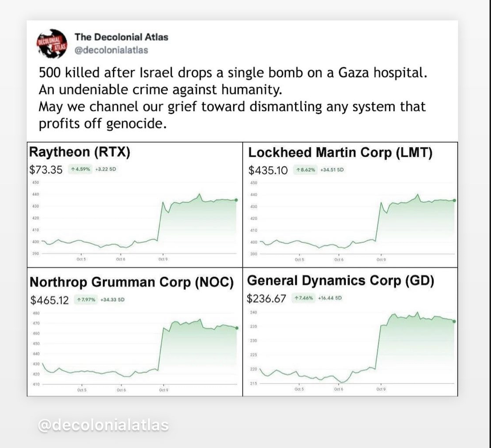
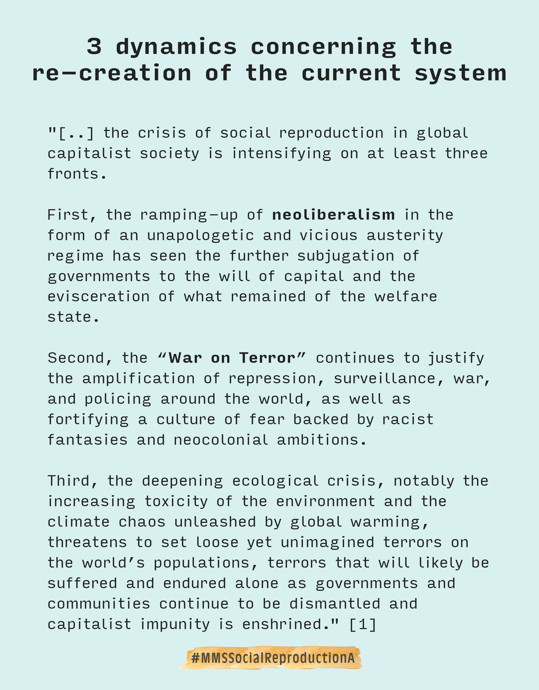

Autopoiesis and the re-production of social systems
Links from the Post MMSSocialReproductionA
- - Haiven, & Khasnabish. (2014). Why social movements need the radical imagination. OpenDemocracy. https://www.opendemocracy.net/en/transformation/why-social-movements-need-radical-imagination/
- [2] - Khasnabish, D. A., & Haiven, M. (2014). The Radical Imagination: Social Movement Research in the Age of Austerity (p. 280). Zed Books.
- [3] - Albert, M. (2016). Luhmann and systems theory (Vol. 1). Oxford University Press. https://doi.org/10.1093/acrefore/9780190228637.013.7
- [4] - Luhmann, N., Schmidt, J. F. K., & Kieserling, A. (2017). Systemtheorie der Gesellschaft (Erste Auflage.). Suhrkamp.
Understanding life as “autopoietic” shines a light on the living, re-producing nature of systems that we create. A factory for airplanes, for instance, is an allopoietic system (that procudes something distinct from itself). The airplane factory and the machines in the airplane factory clearly produce something that is not part of the original system. However, as soon as we include the factory’s supply chains, the workers, mangagers, customers, investors, competitors into the total viable system, we can consider this system to be autopoietic. The larger system will strive to stay existent and re-create itself by exerting power to allow for its identity to continue to exist.
When we consider capitalism, it stands out to me that the military industrial complex is deeply intertwined with the extractive, profit-oriented economic process of late-state capitalism. They keep each other alive by re-producing their shared values through new social containers.
See below how the military complex lives in synergy with the investment (stock) system to keep itself alive. Both capitalist stock investments and military efforts are rooted in value systems of extracting resources for profit from other places by exerting power over people & land. These systems re-produce new companies, institutions, and social containers that keep their values & purpose alive. Power over land & people = colonialism.

The idea that capitalism is based on free land, labor, care, etc, is nicely explained over here: History of the World in Seven Cheap Things: A Guide to Capitalism, Nature, and the Future of the Planet
The idea that values, purpose, and the sense of the sacred (also called ontological primitives) re-appear in the re-produced systems of ours is in detail explained by McGilchrist (2021). The fact that these ontological primitives re-appear in our systems is crucial because it suggests that we need to reflect on our values and hidden mental models in order to move away from the current system. Check out my notes üîÆ MCGILCHRIST2021-VID.
What do we do to heal our world from the climate crisis?
Based on the theory from above, it become obvious that extractive, violent conditiones let emerge new social structures and containers conducive to violence. Even if these systems are not aware of their roots, they will try to stay alive (conserve themselves).
Therefore, I argue, we can only heal our planet by living healthy, balanced lives. This includes the constant reflection on violence (aggressive language or transactional, reductive relationships) in our personal lives. More on integrating healing & regeneration into social systems is summarized in this post with ID üîÆ MMSSocialReproductionB.
Original Post - MMSSocialReproductionA



 MMSSocialReproductionA
MMSSocialReproductionA